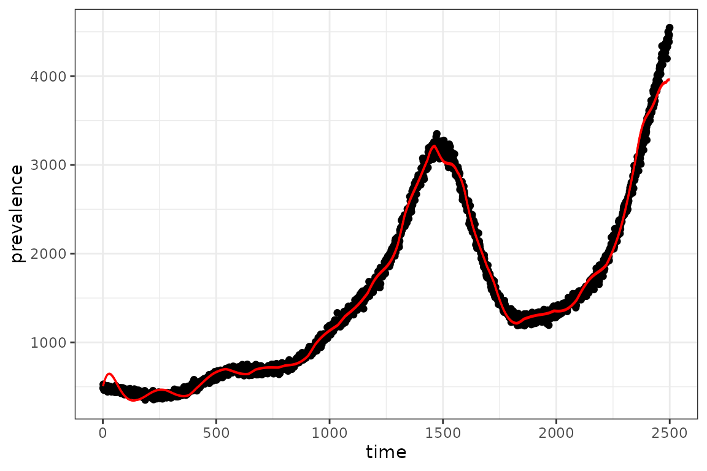

Specifying Time-Varying Parameters
Source:vignettes/time_varying_parameters.Rmd
time_varying_parameters.RmdBaseline SIR Model
Here we modify an SIR model so that transmission rate is time-varying.
We initialize a vector of state labels and parameter default values for convenience and specify a simulation time of 50 time steps.
state_labels = c("S", "I", "R")
time_steps = 50
beta = 0.8 # per-capita transmission rate
gamma = 0.2 # per-capita recovery rateUsing a fixed transmission rate of 0.8 we visualize the baseline SIR
dynamics.

Piecewise Time Variation
To create a piecewise time-varying transmission rate, we need to specify two variables:
-
beta_changepoints- An integer vector containing the starting time steps at which the transmission ratebetachanges. This vector starts with a time step of 0 because we want to specify an initial default value ofbetafollowed by changing transmission rates at the beginning of time-step 10 and 15. (Note: Currentlymacpan2::time_varexpects the argumentchange_pointsto start at 0, so the default value ofbetain this example is not used. In future development,time_varwill acceptchange_points[1] > 0and will use the default value of the parameter for time steps beforechange_points[1]. See Update time_var to incorporate default value) -
beta_valuesA numeric vector containing the valuesbetatakes at each time step specified inbeta_changepoints.
We then need to specify an expression that updates beta
to beta_values at the time steps in
beta_changepoints. We use the time_var
function that will return a value for beta, from
beta_values, by comparing the current time step with the
time steps in beta_changepoints.
Let’s test that time_var is computing what we want for
20 time steps.
simple_sims(
iteration_exprs = expr
, time_steps = 20
# for integer vectors (usually indexing vectors) use `int_vecs`
, int_vecs = list(beta_changepoints = beta_changepoints)
# for numeric vectors (model defaults) use `mats`
# we need to initialize beta because it is a variable in our model
# so we set to 0.8 - at the beginning of the simulation loop (time_step==1)
# beta gets updated so the initial value of beta has no effect in this case
, mats = list(
beta = beta
, beta_values = beta_values)
) |> filter(matrix == "beta")
#> matrix time row col value
#> 1 beta 1 0 0 0.80
#> 2 beta 2 0 0 0.80
#> 3 beta 3 0 0 0.80
#> 4 beta 4 0 0 0.80
#> 5 beta 5 0 0 0.80
#> 6 beta 6 0 0 0.80
#> 7 beta 7 0 0 0.80
#> 8 beta 8 0 0 0.80
#> 9 beta 9 0 0 0.80
#> 10 beta 10 0 0 0.01
#> 11 beta 11 0 0 0.01
#> 12 beta 12 0 0 0.01
#> 13 beta 13 0 0 0.01
#> 14 beta 14 0 0 0.01
#> 15 beta 15 0 0 0.40
#> 16 beta 16 0 0 0.40
#> 17 beta 17 0 0 0.40
#> 18 beta 18 0 0 0.40
#> 19 beta 19 0 0 0.40
#> 20 beta 20 0 0 0.40Now that we know our expression is updating beta
correctly, we can modify the SIR model to include this piece-wise
transmission rate.
# model specification with piece-wise transmission rates
piecewise_spec = (
"starter_models"
# read in model from library
|> mp_tmb_library("sir", package = "macpan2")
# insert expression for updating beta at the beginning of the simulation loop
|> mp_tmb_insert(
phase="during"
, at=1
, expressions = expr
, default = list(
# Note: the default value of beta here has no effect, because at the
# first time step beta is updated to beta_values[1]
beta = beta
, gamma = gamma
, beta_values = beta_values
)
, integers = list(beta_changepoints = beta_changepoints))
)
# check that model spec was updated accordingly
print(piecewise_spec)
#> ---------------------
#> Default values:
#> ---------------------
#> matrix row col value
#> beta 8e-01
#> gamma 2e-01
#> N 1e+02
#> I 1e+00
#> R 0e+00
#> beta_values 0 8e-01
#> beta_values 1 1e-02
#> beta_values 2 4e-01
#>
#> ---------------------
#> Before the simulation loop (t = 0):
#> ---------------------
#> 1: S ~ N - I - R
#>
#> ---------------------
#> At every iteration of the simulation loop (t = 1 to T):
#> ---------------------
#> 1: beta ~ time_var(beta_values, beta_changepoints)
#> 2: mp_per_capita_flow(from = "S", to = "I", rate = infection ~ I *
#> beta/N)
#> 3: mp_per_capita_flow(from = "I", to = "R", rate = recovery ~ gamma)
# create simulator object
piecewise_simulator = (piecewise_spec
|> mp_simulator(time_steps = time_steps, outputs=c(state_labels))
)Now we plot the updated simulations using these change-points, which
we highlight with vertical lines.

The clear changes in dynamics at times 10 and 15 are due to the drop and then lift of the transmission rate at these time steps.
Calibrating Time Variation Parameters
First we simulate data to fit our model to, to see if we can recover the time-varying parameters.
set.seed(1L)
I_observed = (sim_data
|> filter(matrix=="I")
# add some poisson noise
|> mutate(value = rpois(n(),value))
)
plot(I_observed$time, I_observed$value)
We often want to include parameter constraints in our models, and one way to do this implicitly is to transform the parameters (Bolker 2008). Further, transformations can sometimes help when estimating parameters by making the “likelihood surface closer to quadratic” and reducing parameter correlation (Bolker 2008). Here we log-transform because our constraint is that must be positive and the domain of the logarithm is .
# transformed model specification
transformed_spec = mp_tmb_insert(
model = piecewise_spec
, phase = "before"
, at = 1
# we need to exponentiate log transformed values so beta is on the appropriate
# scale when computing model dynamics
, expressions = list(beta_values ~ exp(log_beta_values))
# we also need to specify default values for log_beta_values
# here we set all default values for beta to the mean of the true values
# i.e. mean(log(beta_values))
, default = list(
log_beta_values = rep(mean(log(beta_values)), length(beta_values))
)
)
# Note the true values of beta (`beta_values`) are still included in the default
# list, however they get updated before the simulation loop, so they are not
# informing our estimates for these values when calibrating.
transformed_spec
#> ---------------------
#> Default values:
#> ---------------------
#> matrix row col value
#> beta 0.800000
#> gamma 0.200000
#> N 100.000000
#> I 1.000000
#> R 0.000000
#> beta_values 0 0.800000
#> beta_values 1 0.010000
#> beta_values 2 0.400000
#> log_beta_values 0 -1.914868
#> log_beta_values 1 -1.914868
#> log_beta_values 2 -1.914868
#>
#> ---------------------
#> Before the simulation loop (t = 0):
#> ---------------------
#> 1: beta_values ~ exp(log_beta_values)
#> 2: S ~ N - I - R
#>
#> ---------------------
#> At every iteration of the simulation loop (t = 1 to T):
#> ---------------------
#> 1: beta ~ time_var(beta_values, beta_changepoints)
#> 2: mp_per_capita_flow(from = "S", to = "I", rate = infection ~ I *
#> beta/N)
#> 3: mp_per_capita_flow(from = "I", to = "R", rate = recovery ~ gamma)Next we create the calibrator object and specify that we want to
estimate the vector of time varying transmission rates,
log_beta_values, by passing this parameter name to the
par argument.
# set up calibrator object
piecewise_calib = mp_tmb_calibrator(
spec = transformed_spec
, data = I_observed
, traj = "I"
# we want to estimate the log-transformed parameters
, par = "log_beta_values"
, outputs = state_labels
)
# optimization step
mp_optimize(piecewise_calib)
#> outer mgc: 486.7233
#> Warning in (function (start, objective, gradient = NULL, hessian = NULL, :
#> NA/NaN function evaluation
#> outer mgc: 699.5397
#> outer mgc: 148.8469
#> outer mgc: 190.1806
#> outer mgc: 118.6255
#> outer mgc: 48.17214
#> outer mgc: 3.120084
#> outer mgc: 0.5353311
#> outer mgc: 0.01025667
#> outer mgc: 1.863369e-05
#> outer mgc: 4.034157e-11
#> $par
#> params params params
#> -0.2144229 -2.8405257 -0.8566479
#>
#> $objective
#> [1] 94.85064
#>
#> $convergence
#> [1] 0
#>
#> $iterations
#> [1] 10
#>
#> $evaluations
#> function gradient
#> 14 11
#>
#> $message
#> [1] "relative convergence (4)"After optimizing, we can make a coefficient plot with the estimated values and their confidence intervals, to compare with the true values.
In general, the transmission rate estimates follow the expected pattern changing from high, to low, to moderate. The most precise estimate, for the true value of 0.8, results because the observed prevalence data is most informative about the transmission rate when the infection is initially spreading. It makes sense that we get the most accurate estimate for the final transmission rate because most of the observed data is simulated with the final known transmission rate. We lose accuracy and precision for the middle rate because there is only 5 time steps of observed data informing this parameter.
Radial Basis Functions for Flexible Time Variation (In-Progress)
This section uses radial basis functions (RBFs) to generate models with a flexible functional form for smooth changes in the transmission rate.
Before we can add the fancy radial basis for the transmission rate, we need a base model. We use an SIR model that has been modified to include waning.
sir_waning = mp_tmb_library("starter_models"
, "sir_waning"
, package = "macpan2"
)The macpan2::rbf function can be used to produce a
matrix giving the values of each basis function (each column) at each
time step (each row). Using this matrix,
,
and a weights vector,
,
we can get a flexible output vector,
,
with a shape that can be modified by changing the weights vector.
The following code illustrates this approach.
set.seed(1L)
d = 20
n = 2500
X = rbf(n, d)
b = rnorm(d, sd = 0.01)
par(mfrow = c(3, 1)
, mar = c(0.5, 4, 1, 1) + 0.1
)
matplot(X
, type = "l", lty = 1, col = 1
, ylab = "basis functions"
, axes = FALSE
)
axis(side = 2)
box()
barplot(b
, xlab = ""
, ylab = "weights"
)
par(mar = c(5, 4, 1, 1) + 0.1)
plot(X %*% b
, type = "l"
, xlab = "time"
, ylab = "output"
)
Here d is the dimension of the basis, or number of
functions, and n is the number of time steps. By
multiplying the uniform basis matrix (top panel) by a set of weights
(middle panel), we obtain a non-uniform curve (bottom panel). Note how
the peaks (troughs) in the output are associated with large positive
(negative) weights.
Now we want to transform the output of the (matrix) product of the RBF matrix and the weights vector into a time-series for the transmission rate, . Although we could just use the output vector as the time series, it is more convenient to transform it so that the values yield more interesting dynamics in an SIR model. In particular, our model for as a function of time, , is
Here we have the recovery rate, , and number of susceptibles, , at time, , the total population, , and the th row of , . To better understand the rationale for this equation note that if every element of is set to zero, we have the following condition.
This condition assures that the number of infected individuals remains constant at time, . This means that positive values of will tend to generate outbreaks and negative values will tend to reduce transmission.
fixme: I (BMB) understand why you’re setting the model up this way, but it’s an odd/non-standard setup - may confuse people who are already familiar with epidemic models (it confused me initially).
Here is a simulation model with a radial basis for exogenous transmission rate dynamics.
set.seed(1L)
spec_waning = (sir_waning
|> mp_tmb_insert(
phase = "before"
, at = Inf
, expressions = list(eta ~ gamma * exp(X %*% b))
, default = list(eta = empty_matrix, X = X, b = b)
) |> mp_tmb_insert(
phase = "during"
, at = 1
, expressions = list(beta ~ eta[time_step(1)] / clamp(S/N, 1/100))
)
)
simulator_waning = (spec_waning
|> mp_simulator(
time_steps = n
, outputs = c("S", "I", "R", "infection", "beta")
, default = list(
N = 100000, I = 500, R = 0
, beta = 1, gamma = 0.2, phi = 0.01
))
)
print(simulator_waning)
#> ---------------------
#> Before the simulation loop (t = 0):
#> ---------------------
#> 1: S ~ N - I - R
#> 2: eta ~ gamma * exp(X %*% b)
#>
#> ---------------------
#> At every iteration of the simulation loop (t = 1 to 2500):
#> ---------------------
#> 1: beta ~ eta[time_step(1)]/clamp(S/N, 1/100)
#> 2: infection ~ S * I * beta/N
#> 3: recovery ~ gamma * I
#> 4: waning_immunity ~ phi * R
#> 5: S ~ S - infection + waning_immunity
#> 6: I ~ I + infection - recovery
#> 7: R ~ R + recovery - waning_immunity
(simulator_waning
|> mp_trajectory()
|> ggplot()
+ facet_wrap(~ matrix, ncol = 1, scales = 'free')
+ geom_line(aes(time, value))
)
Calibration
We can perform calibration with a time-varying parameter specified
with a radial basis, by using the function
macpan2::mp_rbf(). We follow the ususal steps in
calibration.
1. Simulate from the model and add some poisson noise:
obs_rbf = (simulator_waning
|> mp_trajectory()
|> filter(matrix=="I")
|> mutate(across(value, ~ rpois(n(), .)))
)2. Add calibration information.
calib_rbf = mp_tmb_calibrator(sir_waning
, data = obs_rbf
, traj = "I"
## estimate
, par = "beta"
, tv = mp_rbf("beta", dimension = d, initial_weights = b)
## pass all defaults, including dimension of the rbf `d` and initial weights vector `b`
, default = list(N = 100000, I = 500, R = 0, beta = 1, gamma = 0.2, phi = 0.01, d = d, b = b)
)
mp_optimize(calib_rbf)
#> outer mgc: 260404.5
#> outer mgc: 516278.6
#> outer mgc: 587174.9
#> outer mgc: 650089
#> outer mgc: 551580.4
#> outer mgc: 577141
#> outer mgc: 544591
#> outer mgc: 343582.7
#> outer mgc: 219354.8
#> outer mgc: 474385.6
#> outer mgc: 759175.8
#> outer mgc: 1981896
#> outer mgc: 572674.8
#> outer mgc: 130718.1
#> outer mgc: 11623.46
#> outer mgc: 2573.963
#> outer mgc: 250.8778
#> outer mgc: 3.075834
#> outer mgc: 0.0004771355
#> outer mgc: 1.20179e-08
#> $par
#> params params params params params params
#> -1.27641280 -0.23972069 -0.88918700 -0.48246900 -0.71662892 -0.54489211
#> params params params params params params
#> -0.66403205 -0.55987089 -0.60953016 -0.48826067 -0.53743851 -0.35883656
#> params params params params params params
#> 0.01438706 -0.51734442 -0.50528656 -0.51390784 -0.56715449 -0.36571049
#> params params params
#> -0.67953264 0.38050808 0.55256297
#>
#> $objective
#> [1] 30057.53
#>
#> $convergence
#> [1] 0
#>
#> $iterations
#> [1] 20
#>
#> $evaluations
#> function gradient
#> 33 20
#>
#> $message
#> [1] "both X-convergence and relative convergence (5)"
## check estimates
mp_tmb_coef(calib_rbf,conf.int = TRUE)
#> outer mgc: 1.20179e-08
#> outer mgc: 10106.35
#> outer mgc: 10244.65
#> outer mgc: 18039.69
#> outer mgc: 18377.17
#> outer mgc: 17661.5
#> outer mgc: 18052.09
#> outer mgc: 17007.5
#> outer mgc: 17390.3
#> outer mgc: 12227.71
#> outer mgc: 12481.76
#> outer mgc: 9350.09
#> outer mgc: 9523.219
#> outer mgc: 8689.409
#> outer mgc: 8849.081
#> outer mgc: 7212.485
#> outer mgc: 7337.635
#> outer mgc: 4499.09
#> outer mgc: 4557.787
#> outer mgc: 2639.332
#> outer mgc: 2663.877
#> outer mgc: 1474.115
#> outer mgc: 1484.504
#> outer mgc: 630.3664
#> outer mgc: 632.9975
#> outer mgc: 367.2692
#> outer mgc: 368.5147
#> outer mgc: 926.993
#> outer mgc: 932.217
#> outer mgc: 2072.398
#> outer mgc: 2092.068
#> outer mgc: 2411.296
#> outer mgc: 2433.905
#> outer mgc: 2161.669
#> outer mgc: 2180.24
#> outer mgc: 1396.096
#> outer mgc: 1405.354
#> outer mgc: 696.5062
#> outer mgc: 699.8151
#> outer mgc: 211.0486
#> outer mgc: 211.5534
#> outer mgc: 89.27029
#> outer mgc: 90.08174
#> outer mgc: 7442.986
#> term mat row col default type estimate std.error
#> 1 params time_var_beta 0 0 -0.0062645381 fixed -1.27641280 0.001463832
#> 2 params.1 time_var_beta 1 0 0.0018364332 fixed -0.23972069 0.001977560
#> 3 params.10 time_var_beta 10 0 0.0151178117 fixed -0.53743851 0.002792037
#> 4 params.11 time_var_beta 11 0 0.0038984324 fixed -0.35883656 0.003704611
#> 5 params.12 time_var_beta 12 0 -0.0062124058 fixed 0.01438706 0.004098547
#> 6 params.13 time_var_beta 13 0 -0.0221469989 fixed -0.51734442 0.003224495
#> 7 params.14 time_var_beta 14 0 0.0112493092 fixed -0.50528656 0.002548279
#> 8 params.15 time_var_beta 15 0 -0.0004493361 fixed -0.51390784 0.002403806
#> 9 params.16 time_var_beta 16 0 -0.0001619026 fixed -0.56715449 0.002599612
#> 10 params.17 time_var_beta 17 0 0.0094383621 fixed -0.36571049 0.003240611
#> 11 params.18 time_var_beta 18 0 0.0082122120 fixed -0.67953264 0.004104058
#> 12 params.19 time_var_beta 19 0 0.0059390132 fixed 0.38050808 0.004919260
#> 13 params.2 time_var_beta 2 0 -0.0083562861 fixed -0.88918700 0.002074339
#> 14 params.20 prior_sd_beta 0 0 1.0000000000 fixed 0.55256297 0.003339349
#> 15 params.3 time_var_beta 3 0 0.0159528080 fixed -0.48246900 0.001927518
#> 16 params.4 time_var_beta 4 0 0.0032950777 fixed -0.71662892 0.001755581
#> 17 params.5 time_var_beta 5 0 -0.0082046838 fixed -0.54489211 0.001597672
#> 18 params.6 time_var_beta 6 0 0.0048742905 fixed -0.66403205 0.001506794
#> 19 params.7 time_var_beta 7 0 0.0073832471 fixed -0.55987089 0.001518645
#> 20 params.8 time_var_beta 8 0 0.0057578135 fixed -0.60953016 0.001727385
#> 21 params.9 time_var_beta 9 0 -0.0030538839 fixed -0.48826067 0.002143931
#> conf.low conf.high
#> 1 -1.279281858 -1.27354374
#> 2 -0.243596641 -0.23584475
#> 3 -0.542910801 -0.53196622
#> 4 -0.366097459 -0.35157565
#> 5 0.006354052 0.02242006
#> 6 -0.523664313 -0.51102453
#> 7 -0.510281099 -0.50029203
#> 8 -0.518619216 -0.50919647
#> 9 -0.572249636 -0.56205934
#> 10 -0.372061971 -0.35935901
#> 11 -0.687576449 -0.67148884
#> 12 0.370866505 0.39014965
#> 13 -0.893252629 -0.88512137
#> 14 0.546017962 0.55910797
#> 15 -0.486246869 -0.47869114
#> 16 -0.720069797 -0.71318804
#> 17 -0.548023491 -0.54176073
#> 18 -0.666985316 -0.66107879
#> 19 -0.562847379 -0.55689440
#> 20 -0.612915777 -0.60614455
#> 21 -0.492462697 -0.484058643. Review results.
The fit to the observed data looks reasonable, however there are some obvious wiggly deviations.
